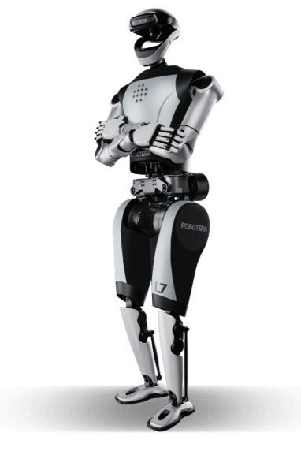

星动 L7当前官网目录配置
星动纪元 · 双足人形 · 已发布
本轮深入L7专用产品页及其当前公开渲染组件，已找到比首页三项概述更完整的15行规格表；重量65 kg为不含灵巧手口径，跑速4 m/s，电池60 V/15 Ah。上述均属于L7，不套用STAR1。

完整规格与依据
身体规格
- 身高
- 171 cm 已核对原文 · 厂商资料
L7专页规格表1.71 m换算171 cm；中文label为高度，非英文首页曾见171 KG误标。
本项资料核验 2026-10-24 - 整机重量
- 65 kg 已核对原文 · 厂商资料
L7专页明确“重量(不含灵巧手)”65 KG；是否含电池未说明，不继承STAR1的63 kg，也不把不含手数值说成全配称重。
本项资料核验 2026-10-24 - 自由度
- 55 DoF 已核对原文 · 厂商资料
L7专页明确“总自由度(含灵巧手)”55；按原文保留统计口径，不由分项重新相加。
本项资料核验 2026-10-24 - 末端执行器
- 星动XHAND 1；单手12主动自由度、全直驱仿人五指 已核对原文 · 厂商资料
L7专用规格表明确型号XHAND 1及12主动DoF；不继承当前XHAND 1 PRO的21主动DoF，也不将其他手系列升级当L7默认配置。
本项资料核验 2026-10-24
运动与操作
- 操作负载
- 20 kg 已核对原文 · 厂商资料
L7专页标“双臂负载”20 KG；非单臂持续负载，姿态和持续时间未列。
本项资料核验 2026-10-24 - 移动速度
- 4 m/s 已核对原文 · 厂商资料
L7专页label为“奔跑速度”，原值4 m/s；非通常作业行走速度，不混用STAR1室外跑速3.6 m/s。
本项资料核验 2026-10-24
电池与工作
- 工作时间
- 待核实
【本轮未找到】L7专用产品组件的15行规格表没有单次工作时间或测试工况；电池60 V/15 Ah不能单独推出续航，不继承STAR1。
本项资料核验 2026-10-24；相关链接不表示厂商从未披露。 - 电池能量
- 待核实
【本轮未找到】L7表直接公开60 V、15 Ah而非Wh；60×15=900 Wh只能作为按标称值计算的理论能量，不冒充厂商直给的可用Wh。
本项资料核验 2026-10-24；相关链接不表示厂商从未披露。 - 电池容量
- 15,000 mAh 已核对原文 · 厂商资料
L7专页“电池容量”60 V 15 Ah，Ah仅换算为mAh；不由充电器电压推算。
本项资料核验 2026-10-24
感知与开发
- 感知配置
- 深度相机、3D激光雷达、麦克风阵列与扬声器 已核对原文 · 厂商资料
中文L7规格对应三栏明确“支持”；组件位置与中英label核对，英文将深度相机称Binocular Camera，具体型号/数量未列，不自行指定RealSense型号。
本项资料核验 2026-10-24 - 计算平台
- 80 TOPS（X86）+275 TOPS（Orin） 已核对原文 · 厂商资料
L7中文与英文专页算力栏一致；保留两部分原标法，不把二者相加作为任务实测355 TOPS，也不从Orin数字推断SKU。
本项资料核验 2026-10-24 - 二次开发
- 待核实
【本轮未找到】已查L7专用页虽展示科研/数采应用与ERA模型演示，但未找到该配置SDK接口清单或明确开放权限；官网通用文档入口不自动等于已确认。
本项资料核验 2026-10-24；相关链接不表示厂商从未披露。
采购信息
- 美元报价
- 待核实
【报价待采集】L7页“立即购买”导向询价/purchase?product=L7，已读规格表不含美元数字报价；不拿M7或灵巧手报价代替。
本项资料核验 2026-10-24；相关链接不表示厂商从未披露。 - 人民币报价
- 待核实
【报价待采集】L7专页的已读规格表与购买入口未给人民币整机报价；历史STAR1价格或其他厂商价不能继承。
本项资料核验 2026-10-24；相关链接不表示厂商从未披露。